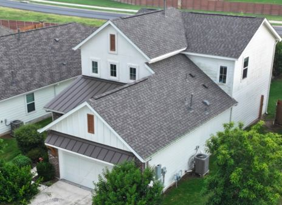

Local Roofing Experts Serving Cedar Park
Verstera Roofing has completed roof repairs, preventative maintenance, inspections, and storm damage work throughout Cedar Park, Texas and the surrounding Northwest Austin metro area.
Cedar Park homes span multiple build decades and roof systems—from older three-tab and architectural shingles to newer impact-resistant and upgraded roofing materials. Because we work in these neighborhoods regularly, we know the common problem areas tied to each era of construction.
From aging pipe boots and flashing failures to wind-lifted shingles and hail damage, our inspections focus on real-world Cedar Park roof issues—not generic checklists.
Schedule Roofing ConsultationRoofing Services for Cedar Park Homeowners
Residential Roofing
Full-service residential roofing for Cedar Park homes, including shingle repairs, roof upgrades, complete roof replacement projects, and routine roof maintenance to extend the life of your roof and prevent leaks.
Roof Maintenance & Preventative Care
Routine roof maintenance designed to prevent leaks, address minor issues early, and extend the lifespan of Cedar Park roofing systems.
Leak Detection & Roof Repair
Precise leak detection and targeted repairs for common Cedar Park trouble spots like penetrations, flashing, valleys, and ventilation components.
Storm & Hail Damage Repairs
Expert roof inspections and repairs following Central Texas hail and wind events, including documentation and insurance claim assistance when needed.
Metal & Tile Roofing
Long-term roofing solutions including stone coated steel, premium hail-resistant shingles, and synthetic tile systems built for Texas weather.
Roof Replacement Planning
Straightforward guidance for Cedar Park homeowners nearing replacement age— helping you plan proactively and avoid surprise failures.